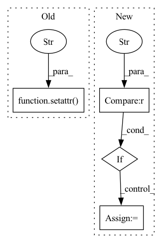

Pattern ID :25641
Before Change
for shift in rand_list:
for key, value in expt.items():
setattr(args, key, value)
setattr( args,"final_state_range" , "[[{},{}],[-0.25,0.25]]".format(4.5+shift, 5.0+shift))
stats, info = ex.main(args)
avg_runtime_avg += stats["avg_runtime"]/rand_lenAfter Change
for expt in expts:
controller_name = expt["controller"]
if controller_name == "discrete_quad_avoid_origin_maneuver_2" :
num_nodes = 40
else:
import re
num_nodes = sum([int(s) for s in re.findall(r"\d+", controller_name)])In pattern: SUPERPATTERN
Frequency: 5
Non-data size: 4
Instances Fragment ID: 77898832
Project Name: mit-acl/nn_robustness_analysis
Commit Name: 3d2cd1f1bff1e6e54e76b61e120625ef91604889
Time: 2023-01-31
Author: nrober1122@gmail.com
File Name: nn_closed_loop/backward_experiments.py
M Class Name: NNScalability
N Class Name: NNScalability
M Method Name: run(1)
N Method Name: run(1)
M Parent Class: Experiment
N Parent Class: Experiment
M File Name: nn_closed_loop/backward_experiments.py
N File Name: nn_closed_loop/backward_experiments.py
M Start Line: 818
M End Line: 898
N Start Line: 818
N End Line: 899
Before Change
setattr(args, "os_name", sys_name)
setattr(args, "version", version)
setattr(args, "log_file_dir", ClientConstants.get_log_file_dir())
setattr( args, "device_id" , FedMLClientRunner.get_device_id())
setattr(args, "config_version", version)
setattr(args, "cloud_region", "")
// Create client runner for communication with the FedML server.After Change
setattr(args, "version", version)
setattr(args, "log_file_dir", ClientConstants.get_log_file_dir())
is_from_docker = False
if hasattr(args, "device_id") and args.device_id is not None and args.device_id != "0" :
setattr(args, "current_device_id", args.device_id)
is_from_docker = True
else:
setattr(args, "current_device_id", FedMLClientRunner.get_device_id())
setattr(args, "config_version", version) Fragment ID: 77898828
Project Name: fedml-ai/fedml
Commit Name: 7efb0c5cd76c4997ff0c7ef6b10dec4c5f4eb9a4
Time: 2022-07-23
Author: alex.gpt.llm@gmail.com
File Name: python/fedml/cli/edge_deployment/client_login.py
M Class Name: AnonimousClass
N Class Name: AnonimousClass
M Method Name: __login_as_client(3)
N Method Name: __login_as_client(3)
M Parent Class:
N Parent Class:
M File Name: python/fedml/cli/edge_deployment/client_login.py
N File Name: python/fedml/cli/edge_deployment/client_login.py
M Start Line: 33
M End Line: 107
N Start Line: 33
N End Line: 117
Before Change
setattr(args, "os_name", sys_name)
setattr(args, "version", version)
setattr(args, "log_file_dir", ClientConstants.get_log_file_dir())
setattr( args, "device_id" , FedMLClientRunner.get_device_id())
setattr(args, "config_version", version)
setattr(args, "cloud_region", "")
// Create client runner for communication with the FedML server.After Change
setattr(args, "version", version)
setattr(args, "log_file_dir", ClientConstants.get_log_file_dir())
is_from_docker = False
if hasattr(args, "device_id") and args.device_id is not None and args.device_id != "0" :
setattr(args, "current_device_id", args.device_id)
is_from_docker = True
else:
setattr(args, "current_device_id", FedMLClientRunner.get_device_id())
setattr(args, "config_version", version) Fragment ID: 77898829
Project Name: fedml-ai/fedml
Commit Name: 7ccd1409f0665c654c0dbdebce99d54c2a0ebf55
Time: 2022-07-23
Author: alexliang.kh@gmail.com
File Name: python/fedml/cli/edge_deployment/client_login.py
M Class Name: AnonimousClass
N Class Name: AnonimousClass
M Method Name: __login_as_client(3)
N Method Name: __login_as_client(3)
M Parent Class:
N Parent Class:
M File Name: python/fedml/cli/edge_deployment/client_login.py
N File Name: python/fedml/cli/edge_deployment/client_login.py
M Start Line: 33
M End Line: 107
N Start Line: 33
N End Line: 117
Before Change
if isinstance(df, np.ndarray):
df = pd.DataFrame(df, columns=self.data.columns, index=self.data.index)
setattr( self, "new_data" , df)
return df
def plot(self, cols=None, st=0, en=None):
After Change
if self._dtype == "list":
self.data = self.data.values.reshape(-1,).tolist()
elif self._dtype == "ndarray" :
self.data = self.data.values
return self.data
Fragment ID: 77898830
Project Name: atrcheema/ai4water
Commit Name: 4bbe9dad018ab7a333b691528d2d333af7701f64
Time: 2021-07-20
Author: ather_abbas786@yahoo.com
File Name: AI4Water/utils/imputation.py
M Class Name: Imputation
N Class Name: Imputation
M Method Name: __call__(1)
N Method Name: __call__(2)
M Parent Class: object
N Parent Class: object
M File Name: AI4Water/utils/imputation.py
N File Name: AI4Water/utils/imputation.py
M Start Line: 76
M End Line: 102
N Start Line: 90
N End Line: 121